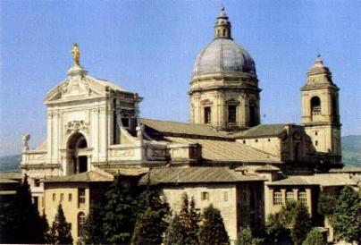
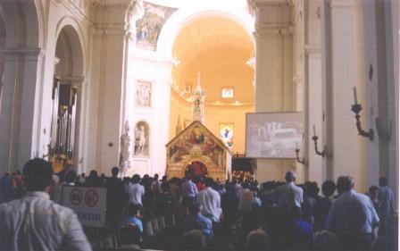
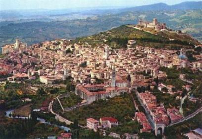
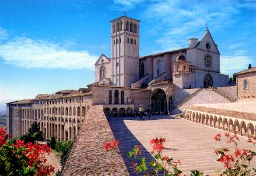

A INDULGÊNCIA
PLENÁRIA - A Indulgência da
Porciúncula somente era concedida a quem visitasse a Igreja de Santa Maria dos Anjos,
entre à tarde do dia 1 agosto e o 

ASSIS DE HOJE - Por isso mesmo, visitar a cidade natal do fundador da Ordem dos Franciscanos, constituí uma satisfação de dimensões ilimitadas, porque nela, o passado e o presente são atuais e cheios de vida, perceptíveis ao se percorrer aqueles locais por onde o alegre jovem Francisco e seus companheiros, devidamente "calibrados"com muito vinho e o coração transbordando de um "amor misterioso", atravessavam as noites cantando serestas a plenos pulmões, pelas ruas estreitas que cortavam a cidade. Com subidas íngremes e grandes declividades nas descidas, as ruas da cidade construída nas fraldas do Monte Subásio, enseja uma visão belíssima do admirável Vale Umbro que se descortina à frente, denominado pelo povo italiano, "Coração Verde da Itália", porque está completamente cultivado em toda a sua extensão. Ali, o Coração de Francisco com sua inquietude e suas músicas foi ao encontro de DEUS e tornou-se maravilhoso e cativante, ganhou virtudes e envolveu as ruas, igrejas e todos os locais, com a lembrança de sua presença marcante, vigorosa e imortal. Por onde se anda, sente-se a alma do "poverello", o seu sorriso, o dedilhar do violão, o solfejar de alguns acordes musicais ou o cantarolar de uma canção... Um encantador mistério que inunda Assis! Neste contagiante ambiente reúnem-se diariamente pessoas de todo o mundo: brancos, pretos, amarelos, vermelhos, velhos e jovens, homens e mulheres com notável espírito de fé, transitando pelas ruas, superlotando as Basílicas e Igrejas, visitando todos os locais por onde Francisco andou. Então é comum durante o dia ou a noite cruzarmos com Sacerdotes, seminaristas, irmãos, freiras, irmãs de caridade, todos com seus trajes de religiosos franciscanos e mesmo de outras Ordens, deslocando-se alegremente ou com passadas ligeiras em direção aos seus afazeres. Vê-se também misturados com os turistas, uma quantidade apreciável de grupos de jovens como não se vê em nenhum outro lugar, cantando, sorrindo e rezando, conduzindo os seus violões ou dedilhando acordes de uma melodia, acompanhando as entusiasmadas vozes de seus companheiros, recordando o espírito do jovem Francisco em suas noitadas em Assis.
As Missas se multiplicam durante todo o dia, de hora em hora são celebradas com intensa participação dos fieis, que com simplicidade e devoção mostram o fervor da fé e uma sincera adoração ao DEUS de nossa vida.
E toda aquela região: Assis, São Damião, Santa Maria degli Angeli (Porciúncula) e RivoTorto, que formam um pequeno retângulo, encerra mais de 80% das lembranças e das atividades do Santo. Mesmo sendo um ambiente público, sente-se nele uma agradável atmosfera de santidade que envolve todos os recantos e contagia os corações abertos ao amor. Em Santa Maria degli Angeli distante apenas 3 quilômetros de Assis, onde Francisco viveu a maior parte de sua vida e morreu, foi construída uma magnífica e ampla Basílica de Santa Maria dos Anjos, marco impressionante e admirável da presença franciscana. Em seu interior encontra-se a pequena Capela da Porciúncula, como existia na época do Santo, e a cela onde Francisco habitou e morreu. Foi nesta pequena Igreja da Porciúncula que o Santo teve a visão de JESUS e de NOSSA SENHORA cercada por Anjos, e onde também suplicou ao SENHOR e conseguiu, a preciosa Indulgência Plenária para toda humanidade.
Quem tiver oportunidade de viajar até a Itália, deve também visitar Assis, especialmente nos dias 1º e 2 de Agosto, para sentirem em plenitude a grandeza do Amor de DEUS e receberem diretamente, no local onde nasceu, a Indulgência Plenária da Porciúncula, que redime todos os pecados cometidos e as consequentes culpas, desde o dia do nascimento até aquele bendito e histórico momento no interior da Igreja de Santa Maria dos Anjos.


1 - Vista aérea de Assis; 2 - Basílica de São Francisco em Assis.